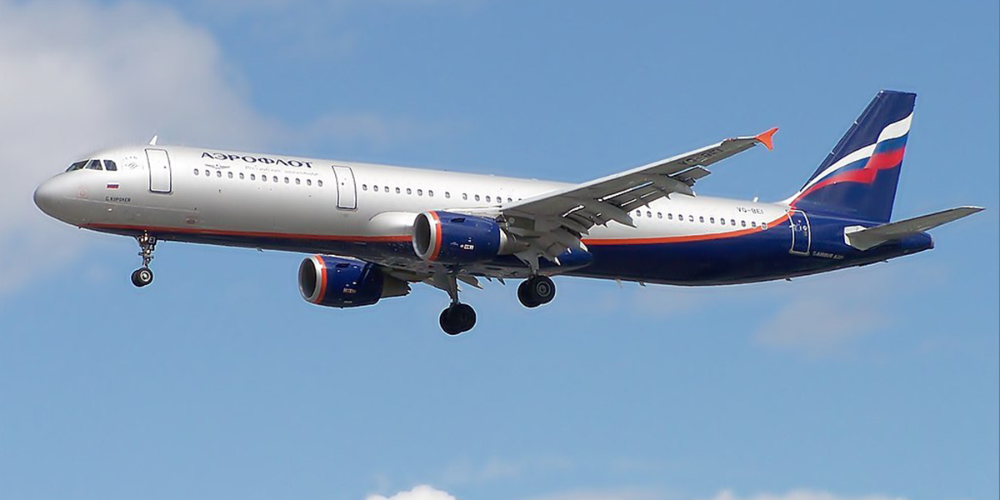
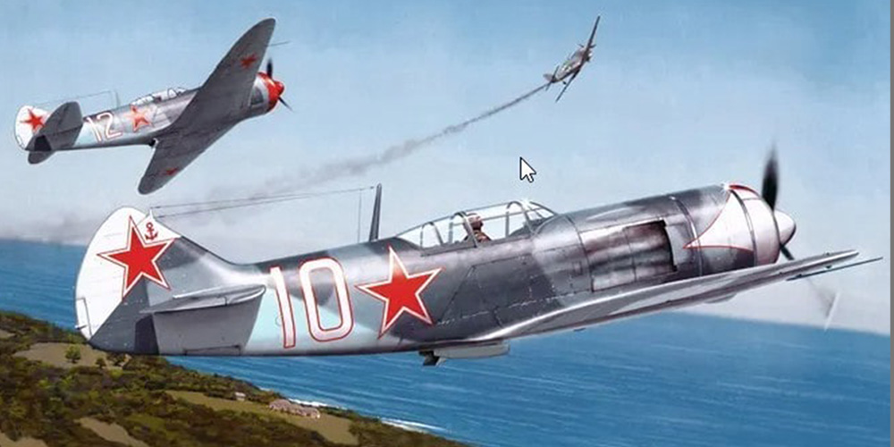
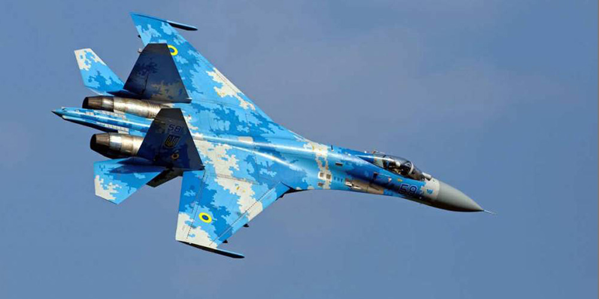
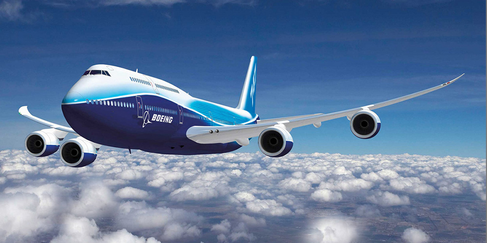

Современные пассажирские самолеты

Пассажирский самолёт — это самолёт, предназначенный для перевозки пассажиров и багажа.
Они делятся на дальнемагистральные, среднемагистральные, ближнемагистральные и самолёты
местных воздушных линий. По конструкции фюзеляжа пассажирские самолёты бывают
широкофюзеляжные и узкофюзеляжные. Крупнейшие производители пассажирских самолётов включают Airbus,
Boeing и Ильюшина.
Самолеты Второй Мировой войны

Во время Второй мировой войны самолёты играли важную роль в противостоянии между странами Оси и антигитлеровской коалицией.
Среди знаменитых советских самолётов были истребители И-16, Ла-7 и Як-9, штурмовик Ил-2 и бомбардировщик У-2.
Современные боевые истребители

Современные боевые истребители — это мощные и высокотехнологичные машины, разработанные для выполнения различных задач
в воздухе. Они оснащены передовыми системами навигации, радиолокации и вооружения. Среди наиболее известных истребителей
можно выделить F-35 Lightning II, F-22 Raptor, F-15EX Eagle II, Dassault F4 Rafale, Eurofighter Typhoon, Saab JAS 39
Gripen, Су-35 и Су-57. Эти самолёты отличаются высокой манёвренностью, дальностью полёта и способностью выполнять сложные
боевые задачи.
12 самых больших самолетов в России и мире в 2024 году

Самолеты появились больше века назад и прошли славный путь от смертельных снарядов до самого безопасного транспорта.
В мире авиаперевозок существуют свои рекордсмены — самые большие самолеты, предназначенные как для пассажирских, так и для
грузовых перевозок.